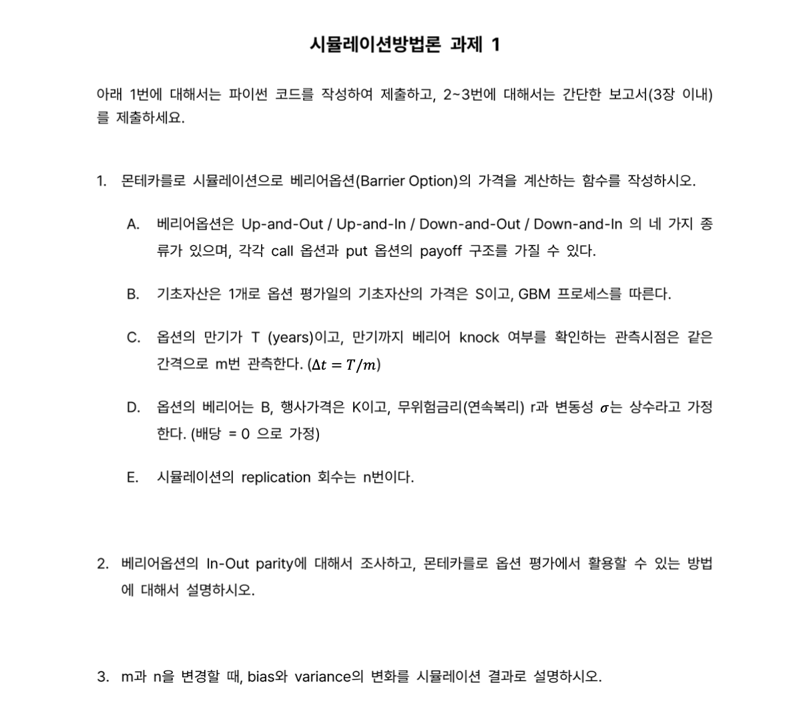

import numpy as np
def GBM_path(s, r, std, t, m):
dt = t/m
z = np.random.standard_normal( m )
ratio_path = np.exp((r-0.5*(std**2))*dt+std*np.sqrt(dt)*z)
price_path = s*ratio_path.cumprod()
return price_path
def BarrierOptionsPrice(s, k, t, b, r, std, UpDown, InOut, CallPut, n=10000,m=250):
'''
s : underlying price at t=0
k : strike price
t : maturity (year)
b : barrier price
r : risk-free rate (annualization, 1%=0.01)
std : standard deviation of underlying return (annualization, 1%=0.01)
UpDown : Up is "U", Down is "D" (should be capital)
InOut : In is "I", Out is "O" (should be capital)
CallPut : Call is "C", Put is "P" (should be capital)
n : number of simulation
m : number of euler-discrete partition
'''
barrier_simulation = np.zeros(n)
for i in range(n):
underlying_path = GBM_path(s,r,std,t,m)
if UpDown=="U" and InOut=="O" :
payoff_logic = 1 if np.sum(underlying_path>=b)==0 else 0
elif UpDown=="U" and InOut=="I" :
payoff_logic = 0 if np.sum(underlying_path>=b)==0 else 1
elif UpDown=="D" and InOut=="O" :
payoff_logic = 1 if np.sum(underlying_path<b)==0 else 0
elif UpDown=="D" and InOut=="O" :
payoff_logic = 0 if np.sum(underlying_path<b)==0 else 1
if CallPut=="C" :
plain_price = np.maximum(underlying_path[-1]-k,0)*np.exp(-r*t)
elif CallPut=="P" :
plain_price = np.maximum(k-underlying_path[-1],0)*np.exp(-r*t)
barrier_simulation[i] = plain_price*payoff_logic
barrier_price = barrier_simulation.mean()
return barrier_price, barrier_simulation시뮬레이션 과제1 (베리어옵션)
20249132 김형환
Question

Answer 1
파라미터 및 알고리즘
먼저, MCS를 이용한 베리어옵션의 가격 계산에 필요한 파라미터는 아래와 같습니다.
s : 기초자산의 가격
k : 옵션의 행사가격
t : 옵션의 만기(연)
b : 옵션의 베리어
r : 무위험 금리
std : 기초자산의 변동성(표준편차)
UpDown : "U"이면 기초자산이 베리어보다 크면 knock, "D"이면 작으면 knock
InOut : "I"이면 Knock-in, "O"이면 Knock-out
CallPut : "C"이면 콜옵션, "P"이면 풋옵션
n : 시뮬레이션의 반복 횟수
m : 기초자산의 가격 관측 횟수
seed(=0) : 난수 생성의 최초 시드값위 파라미터를 이용해 베리어옵션 가격 산출 함수를 구성할 계획이며, 알고리즘은 아래와 같습니다.
- GBM을 따르는 기초자산의 가격 경로를 이산오일러근사를 이용하여 구성
- 이를 통해, 관측된 m개의 기초자산의 가격과 초기값 \(S_0\)까지 m+1개의 기초자산 기준값 생성
- 기초자산 기준값과 베리어를 비교하여 옵션 pay-off 발생 여부 판단
- Up and Out : 모든 기준값이 베리어보다 작은 경우, pay-off 발생
- Down and Out : 모든 기준값이 베리어보다 큰 경우, pay-off 발생
- Up and In : 어느 기준값 중 하나라도 베리어보다 큰 경우, pay-off 발생
- Down and In : 어느 기준값 중 하나라도 베리어보다 작은 경우, pay-off 발생
- pay-off가 없으면 옵션가치는 0, 있으면 Call/Put 종류에 따라 pay-off를 계산하고, 그 현재가치가 이번 시뮬레이션의 옵션의 가치
- 1~5를 n번 반복후 모든 옵션가치를 평균하여 최종적으로 베리어옵션의 가격 산출
이에 따른 Python 코드는 아래와 같습니다.
Python 구현
Analytic Solution과 비교
해당 코드를 이용하여 베리어옵션 가격을 추정할 수 있으며, 이를 예재(QuantLib)의 결과값과 비교해보겠습니다.
시뮬레이션 파라미터는 n=10000, m=250으로 설정하였습니다.
import QuantLib as ql
S = 100; r = 0.03; vol = 0.2; T = 1; K = 100; B = 120; rebate = 0
barrierType = ql.Barrier.UpOut; optionType = ql.Option.Call
#Barrier Option
today = ql.Date().todaysDate(); maturity = today + ql.Period(T, ql.Years)
payoff = ql.PlainVanillaPayoff(optionType, K)
euExercise = ql.EuropeanExercise(maturity)
barrierOption = ql.BarrierOption(barrierType, B, rebate, payoff, euExercise)
#Market
spotHandle = ql.QuoteHandle(ql.SimpleQuote(S))
flatRateTs = ql.YieldTermStructureHandle(ql.FlatForward(today, r, ql.Actual365Fixed()))
flatVolTs = ql.BlackVolTermStructureHandle(ql.BlackConstantVol(today, ql.NullCalendar(), vol, ql.Actual365Fixed()))
bsm = ql.BlackScholesProcess(spotHandle, flatRateTs, flatVolTs)
analyticBarrierEngine = ql.AnalyticBarrierEngine(bsm)
#Pricing
barrierOption.setPricingEngine(analyticBarrierEngine)
QL_UOCprice = barrierOption.NPV()
# Hyeonghwan Pricing
HH_UOCprice, HH_UOCmatrix = BarrierOptionsPrice(S, K, T, B, r, vol, "U", "O", "C")
print("Up & Out Call with S=100, K=100, B=120, T=1, Vol=0.2, r= 0.03","\n",
"QuantLib price :", QL_UOCprice,"\n",
"Hyeonghwan price :", HH_UOCprice,"\n",
"Difference is", QL_UOCprice - HH_UOCprice)Up & Out Call with S=100, K=100, B=120, T=1, Vol=0.2, r= 0.03
QuantLib price : 1.155369999815115
Hyeonghwan price : 1.308270076750196
Difference is -0.152900076935081다음은 동일한 파라미터를 이용하여 Up and In Call Barrier Option price를 비교하였습니다.
Up & In Call with S=100, K=100, B=120, T=1, Vol=0.2, r= 0.03
QuantLib price : 8.258033384037908
Hyeonghwan price : 8.07106974868496
Difference is 0.18696363535294758비교결과, 대체로 유사하였으나 오차가 상당수준 발생하였습니다.
Up&Out에서는 MCS의 결과값이 크고 Up&In에서는 Analytic form의 결과값이 큰 경향이 있는데,
이는 이산-오일러 근사을 통해 Continuous 구간을 m개(discrete)로 나누면서 발생한 것으로 추정됩니다.
(모형 이산화 오류(Model Discretization Error)로 인해 편의(Bias) 발생)
즉, 실제 베리어 Knock 여부는 기초자산의 연속적인 가격흐름을 모두 관측하여 판단해야하지만,
이산화 과정에서 m번만 관측(m=250은 1일에 1번꼴)하게 되면서 그 사이의 가격을 관측할 수 없게 됩니다.
이로 인해 Knock-out 방식의 옵션은 고평가되고, Knock-in 방식의 옵션은 저평가되는 결과가 나타납니다.
이러한 편의는 m이 커질수록 작아져서 0으로 수렴하게 되며, 이에 대해서는 Answer3에서 다루겠습니다.
Answer 2
In-Out parity 정의
베리어옵션의 In-Out parity란, 특정 상황에서 베리어옵션과 plain vanilla option의 가격 사이에 성립하는 등식을 말합니다.
구체적으로 plain vanilla call option이 \(c_{plain}=f(S,K,T,r,\sigma,d)\)로 주어져있고,
베리어 B를 Knock할 때, 위 옵션과 동일한 pay-off를 제공하는 베리어옵션을 \(c_{In}\), \(c_{Out}\)라고 한다면,
이들 옵션 사이에는 아래와 같은 등식이 성립하게 됩니다.
\[c_{In}+c_{Out}=c_{plain}\]
이는 풋옵션에서도 동일하게 성립되며, 일반적인 유로피안 옵션은 Knock-In + Knock-Out 배리어옵션으로 분해할 수 있다는 의미가 됩니다.
증명
예시를 통해 In-Out parity가 성립함을 쉽게 알 수 있습니다.
배리어가 B로 동일한 Knock-In & Out 옵션을 각각 I와 O라고 하겠습니다.
I는 lookback period동안 기초자산의 가격이 B를 한번이라도 Knock하는 경우 payoff가 발생합니다. (Up & Down 포괄)
O는 lookback period동안 기초자산의 가격이 B를 한번이라도 Knock하지 않는 경우 payoff가 발생합니다.
따라서, 기간동안 Knock가 발생하면 I는 payoff가 발생하고 O는 payoff가 0이 되며,
Knock가 발생하지 않으면 I는 payoff가 0이 되고 O는 payoff가 발생합니다.
즉, I+O로 구성된 배리어옵션 포트폴리오를 생각하면 모든 기초자산의 가격범위에 대하여 payoff가 한번 발생하고
해당 payoff는 plain vanilla 옵션의 payoff와 동일하므로 In-Out parity가 성립하게 됩니다.
이를 수식으로 표현하면 아래와 같습니다.
\(c_{In}+c_{Out}=E^Q[e^{-rT}(S_T-K)^+\mathbb{I}_{(\exists S_t\geq B)}]+E^Q[e^{-rT}(S_T-K)^+\mathbb{I}_{(\forall S_t< B)}]\)
\(\;\;\;\;\;\;\;\;\;\;\;=E^Q[e^{-rT}(S_T-K)^+](\mathbb{I}_{(\exists S_t\geq B)}+\mathbb{I}_{(\forall S_t<B)})=E^Q[e^{-rT}(S_T-K)^+]\)
\(\;\;\;\;\;\;\;\;\;\;\;=c_{plain}\;where\;\mathbb{I}_A=1\;if\;A\;is\;true\;else\;0\)
이는 MCS방식으로 베리어옵션을 가치평가를 할 때에도 쉽게 알 수 있는데,
위 python코드에서 베리어옵션의 종류에 따라 payoff 발생여부를 판별할 때 사용한 if문에서
In, Out의 차이는 동전던지기의 앞뒷면처럼 상호배타적(mutually exclusive)임을 알 수 있습니다.
MCS에서의 활용
한종류의 베리어옵션과 plain 옵션의 가격을 알고 있다면 다른 한 종류의 베리어옵션의 가격이 결정되므로,
MCS를 이용하여 베리어옵션의 가격을 계산할 때 두번의 시뮬레이션을 한번으로 축소할 수 있을 것으로 생각해볼 수 있습니다.
그러나, 이는 현재 위 코드가 사전에 In, Out을 지정하고 한 경우에 대해서 return값을 반환하기 때문인데
이를 수정하여 Input으로 In, Out을 지정하지 않고 함수 내에서 In, Out 결과값을 각각 반환하게 한다면
시뮬레이션의 축소효과는 사라지게 됩니다.
더 나아가, 한번의 GBM경로를 생성하는 것에서 plain vanilla call&put, 배리어 In&Out, Up&Down옵션의 가격을
모두 산출할 수 있으므로 parity를 이용하여 시뮬레이션 시간을 극적으로 단축하기는 어려울 것 같습니다.
이외에도 산출된 결과값들끼리 parity를 이용해 적정성 여부를 검증하는 용도로는 활용성이 있을 것 같습니다.
이때에도, parity가 성립하려면 bsm fomula를 통한 plain vanilla옵션이 아닌,
베리어옵션과 동일한 이산오일러근사를 사용한 plain vanilla옵션의 가격을 사용해야 합니다.
Answer 3
N, M에 따른 bias와 variance의 변화를 살펴보겠습니다.
이를 살펴보기 위해 시뮬레이션 결과값인 베리어옵션가격. 즉, 표본평균 \(\bar y\)의 분포를 이용하겠습니다.
CLT에 따라 베리어옵션가격의 분포는 \(\bar y\sim N(y_{real}, \frac{\sigma^2}{N})\)를 따르게 됩니다.
\(Bias^2=(E[\bar y]-y_{real})^2\), \(Variance=E[(\bar y-E[\bar y])^2]\)이므로,
주어진 N, M의 값에 대하여 K(>30)번 시뮬레이션을 반복하여 \(\bar y_k\)를 얻은 후 이를 계산해보겠습니다.
\(y_{real}\)은 QuantLib의 결과값이라고 가정하고, Up&Out call옵션을 예시로 살펴보았습니다.
import time
y_real = QL_UOCprice
N = 1000; M = 250
y_k, se_k = np.zeros(30), np.zeros(30)
start = time.time()
for i in range(30):
y_mean, y = BarrierOptionsPrice(S, K, T, B, r, vol, "U", "O", "C", n=N, m=M)
se = y.std(ddof = 1) / np.sqrt(N)
y_k[i], se_k[i] = y_mean, se
end = time.time()
bias = (y_k.mean()-y_real)**2
variance = y_k.var(ddof = 1)
stan_error = se_k.mean()**2
cal_time = (end-start)/30
print("When N :",N," and M :",M,"\n",
"Bias^2 :",bias,"\n",
"Variance :", variance, "\n",
"S.E^2 :", stan_error, "\n",
"MSE :", bias+variance, "\n",
"Time for 1 simulation:", cal_time, "second", "\n")When N : 1000 and M : 250
Bias^2 : 0.02034260381728806
Variance : 0.011172493745371749
S.E^2 : 0.011352372141769877
MSE : 0.03151509756265981
Time for 1 simulation: 0.019492228825887043 second
N을 증가시킬수록 시뮬레이션의 분산은 감소하나 편의는 감소하지 않는 경향이 있습니다.
When N : 3000 and M : 250
Bias^2 : 0.021898165754529512
Variance : 0.0030069115133548887
S.E^2 : 0.003844552850899204
MSE : 0.0249050772678844
Time for 1 simulation: 0.05749679406483968 second
When N : 5000 and M : 250
Bias^2 : 0.022792874372837498
Variance : 0.0021947889967483592
S.E^2 : 0.002318727780316533
MSE : 0.02498766336958586
Time for 1 simulation: 0.0960538387298584 second
When N : 10000 and M : 250
Bias^2 : 0.020293637118458125
Variance : 0.0012303064071476398
S.E^2 : 0.0011491453338025096
MSE : 0.021523943525605764
Time for 1 simulation: 0.19469877084096274 second
M을 증가시킬수록 편의는 감소하나 분산은 유사한 경향이 있습니다.
When N : 3000 and M : 100
Bias^2 : 0.052700199147094576
Variance : 0.00488221648081155
S.E^2 : 0.0041419361049547685
MSE : 0.05758241562790613
Time for 1 simulation: 0.04366606871287028 second
When N : 3000 and M : 250
Bias^2 : 0.020866053684230154
Variance : 0.0037050776372161347
S.E^2 : 0.003828211154638729
MSE : 0.02457113132144629
Time for 1 simulation: 0.05730129877726237 second
When N : 3000 and M : 500
Bias^2 : 0.008911122160032332
Variance : 0.0034038382851468113
S.E^2 : 0.003636138747387505
MSE : 0.012314960445179143
Time for 1 simulation: 0.08127163251241049 second
When N : 3000 and M : 1000
Bias^2 : 0.005096172348748554
Variance : 0.0026514947754144465
S.E^2 : 0.0035802674641335582
MSE : 0.007747667124163001
Time for 1 simulation: 0.12787216504414875 second
N과 M을 증가시킬수록 계산시간도 증가하므로, 한정된 계산시간 하에 MSE를 최소화하도록 N과 M을 정해야할 필요가 있습니다.